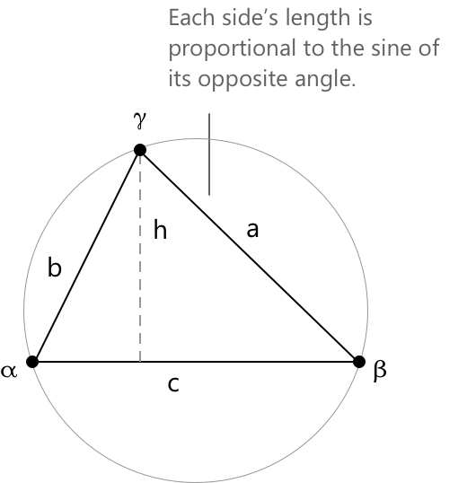

Теорема синусів
Означення
Теорема синусів стверджує, що в будь-якому трикутнику відношення довжини сторони до синуса протилежного їй кута є однаковим для всіх трьох сторін. Для трикутника зі сторонами \(a, b, c\), що лежать проти кутів \(\alpha, \beta, \gamma\) відповідно, це спільне відношення дорівнює подвоєному радіусу \(r\) описаного кола:
\[ \frac{a}{\sin \alpha} = \frac{b}{\sin \beta} = \frac{c}{\sin \gamma} = 2r \]
Величина \(2r\) є діаметром описаного кола, тобто єдиного кола, що проходить через усі три вершини трикутника.

Теорема синусів особливо корисна, коли відомі деякі сторони або кути трикутника і необхідно визначити інші, оскільки кожну невідому можна знайти за допомогою простої пропорції.
Щоб встановити рівність трьох відношень, розглянемо висоту \(h\), проведену з вершини протилежної стороні \(c\) до самої сторони \(c\). За означенням функції синуса, застосованим до кутів \(\alpha\) та \(\beta\), маємо \(\sin(\alpha) = h/b\) та \(\sin(\beta) = h/a\), звідси \(b\sin(\alpha) = h = a\sin(\beta)\). Ділення обох частин на \(\sin(\alpha)\sin(\beta)\) дає:
\[ \frac{a}{\sin(\alpha)} = \frac{b}{\sin(\beta)} \]
Аналогічний аргумент, застосований до висоти з вершини протилежної стороні \(a\), дає \(\sin(\beta) = h’/c\) та \(\sin(\gamma) = h’/b\), і, отже:
\[ \frac{b}{\sin(\beta)} = \frac{c}{\sin(\gamma)} \]
Оскільки перше відношення дорівнює другому, а друге дорівнює третьому, всі три є рівними.
Щоб зрозуміти, чому спільне значення дорівнює \(2r\), зауважимо, що коли трикутник вписаний у своє описане коло радіуса \(r\), теорема про вписаний кут передбачає, що хорда довжиною \(a\) опирається на центральний кут \(2\alpha\). Зв'язок між хордою та радіусом кола тоді дає \(a = 2r\sin(\alpha)\), звідси \(a/\sin(\alpha) = 2r\). За симетрією те саме справедливо для інших двох сторін.
Теорема синусів часто використовується разом із теоремою косинусів, яка забезпечує доповнюючий підхід до розв'язання трикутників, коли відомі різні комбінації сторін і кутів.
Приклад 1
Розглянемо трикутник, у якому \(\alpha = 40^\circ\), \(\beta = 65^\circ\) та \(a = 10\). Мета — визначити довжину сторони \(b\), яка лежить проти \(\beta\). Оскільки сума внутрішніх кутів будь-якого трикутника дорівнює \(180^\circ\), третій кут становить \(\gamma = 180^\circ – 40^\circ - 65^\circ = 75^\circ\). Застосування теореми синусів до пари, що включає \(a\) та \(b\), дає:
\[ \frac{10}{\sin 40^\circ} = \frac{b}{\sin 65^\circ} \]
Множення обох частин на \(\sin 65^\circ\) дозволяє виділити \(b\):
\[ b = \frac{10 \cdot \sin 65^\circ}{\sin 40^\circ} = \frac{10 \cdot 0.9063}{0.6428} \approx 14.1 \]
Довжина сторони \(b\) становить приблизно \(14.1\) одиниці.
Неоднозначний випадок
У конфігурації Сторона-Сторона-Кут (ССК), де задано дві сторони \(a\) та \(b\) і кут \(\alpha\) протилежний одній із них, теорема синусів не обов'язково визначає єдиний трикутник. Виділення \(\sin(\beta)\) з пропорції дає:
\[ \sin(\beta) = \frac{b \sin(\alpha)}{a} \]
Оскільки функція синуса задовольняє рівності \(\sin(\theta) = \sin(180^\circ – \theta)\) для кожного \(\theta \in (0^\circ, 180^\circ)\), це значення може відповідати двом різним кутам, \(\beta\) та \(180^\circ - \beta\). Те, чи жоден, один чи обидва з них утворюють правильний трикутник, залежить від відносних величин \(a\), \(b\) та висоти з вершини протилежної стороні \(c\). Кожне потенційне значення \(\beta\), отже, має бути розглянуте окремо, щоб перевірити, чи сума отриманих кутів менша за \(180^\circ\) і чи всі сторони є додатними.
Приклад 2
Розглянемо трикутник, у якому \(\alpha = 35^\circ\), \(a = 7\) та \(b = 10\). Мета полягає в тому, щоб визначити всі можливі значення кута \(\beta\) і для кожного з них відповідний трикутник. Застосування теореми синусів для вираження \(\sin(\beta)\) дає:
\[ \begin{align} \sin(\beta) &= \frac{b \sin(\alpha)}{a} \\[6pt] &= \frac{10 \cdot \sin 35^\circ}{7} \\[6pt] &= \frac{10 \cdot 0.5736}{7} \\[6pt] &\approx 0.8194 \end{align} \]
Оскільки \(0 < 0.8194 < 1\), рівняння \(\sin(\beta) = 0.8194\) має два розв'язання на проміжку \((0^\circ, 180^\circ)\):
\[\beta_1 = \arcsin(0.8194) \approx 55.0^\circ\] \[\qquad \beta_2 = 180^\circ – 55.0^\circ = 125.0^\circ\]
Кожне значення необхідно перевірити на відповідність умові, що сума всіх трьох кутів дорівнює \(180^\circ\). Для \(\beta_1 = 55.0^\circ\) третій кут становить: \[\gamma_1 = 180^\circ - 35^\circ – 55^\circ = 90^\circ\]
Цей кут є додатним, отже перший трикутник існує. Для \(\beta_2 = 125.0^\circ\) третій кут становить: \[\gamma_2 = 180^\circ – 35^\circ - 125^\circ = 20^\circ\]
Цей випадок також є додатним, тому другий трикутник також існує. Ці два трикутники не є рівними: перший має кути \(35^\circ, 55^\circ, 90^\circ\), а другий має кути \(35^\circ, 125^\circ, 20^\circ\).
Обидва узгоджуються із заданими даними \(\alpha = 35^\circ\), \(a = 7\), \(b = 10\), що підтверджує можливість існування двох різних трикутників, які задовольняють однакові початкові умови.